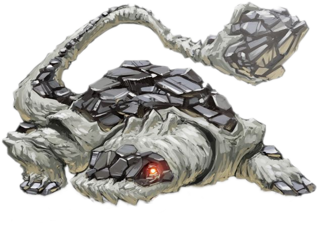

This shadowy berserker, though quite large, can still act as a stealthy threat in the dead of night. It lies under the cover of dark rock and foliage, dormant as if it were but a piece of the scenery, but once its psychic link informs it of nearby prey, it begins to charge forth and mercilessly crush all in its path.
The Greater Ignia prefers to gather around areas with volcanic activity, gaining their energy from the heat and ash. A healthy or aggressive Ignia may rampage with heavy spurts of lava erupting from its body.
